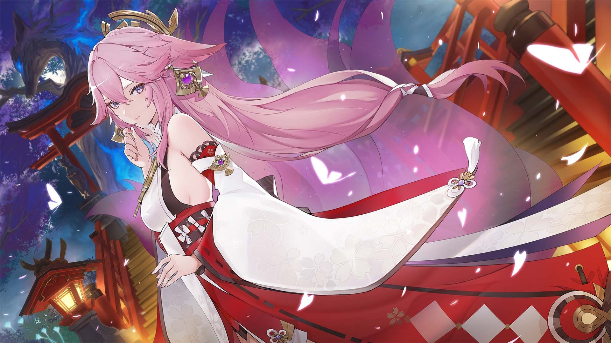
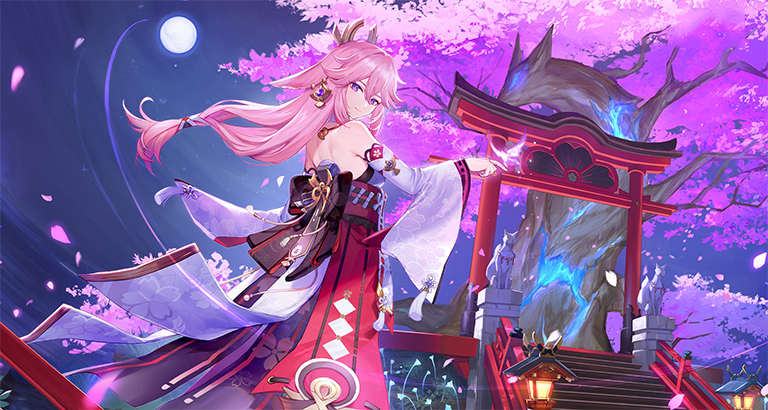

八重神子

角色形象
身份背景
稻妻鸣神大社的宫司大人，掌管神社的一切事宜。兼任轻小说出版社“八重堂”总编。永恒之神的眷属，也是与其关系最为密切的好友 。
细究起来，八重神子的头衔竟与她的性情同样难测多变。出于各种目的试图搞清神子“真面目”的人，可以从天领奉行府一路排到“八重堂”门口，然而迄今为止，成功者依旧寥寥

性格特点
八重神子优雅温柔的外表下藏着令人意想不到的聪慧狡黠，是位不能用寻常道理揣测的女性。她和雷神同样追求永恒，但她的内心更为清醒睿智，并且做事有一套自己的原则和手法 。
八重神子有着多重身份，不必追寻其中任何一面。每一面都是八重神子，每一面却也无法成为真正的她。各种姿态，都犹如镜子的碎片，映射出截然不同的她。因诸多身份包裹，她亦成为了一块被无数面御镜包围的宝钻。上百种面相，严肃或快活，悲悯或漠然。无人知晓真实，就像无人能轻易从秘林中找到一只与过客擦肩的仙狐 。
返回首页